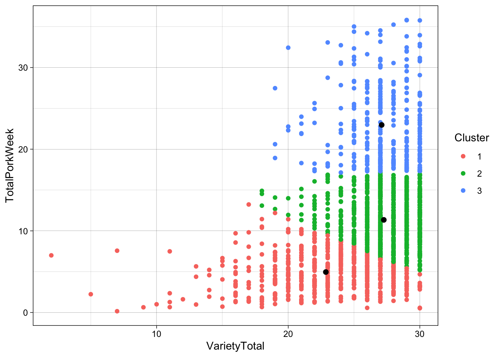

Chapter 23 Mixed models
Mixed models are used when there is repetitions in the response due to (here) the person conducting the trial. The two days are repetitions, and hence we can use all the data (not splitting in to days), but need to account for the person in the model.
# subset the data
x <- pasta %>%
filter(str_detect(StationName,'mush'))
mdl <- lmer(data = x, Consumption~I_like_taste_of_pasta_with_mushrooms + Day + (1|Person))
summary(mdl)## Linear mixed model fit by REML. t-tests use Satterthwaite's method [
## lmerModLmerTest]
## Formula: Consumption ~ I_like_taste_of_pasta_with_mushrooms + Day + (1 |
## Person)
## Data: x
##
## REML criterion at convergence: 309
##
## Scaled residuals:
## Min 1Q Median 3Q Max
## -1.1229 -0.5717 -0.1507 0.4085 2.0757
##
## Random effects:
## Groups Name Variance Std.Dev.
## Person (Intercept) 1561 39.51
## Residual 4794 69.24
## Number of obs: 30, groups: Person, 15
##
## Fixed effects:
## Estimate Std. Error df
## (Intercept) 112.594 56.211 24.517
## I_like_taste_of_pasta_with_mushroomsAgree -1.222 47.725 24.747
## I_like_taste_of_pasta_with_mushroomsStrongly agree 48.220 46.189 24.317
## Day -2.837 25.380 13.759
## t value Pr(>|t|)
## (Intercept) 2.003 0.0563 .
## I_like_taste_of_pasta_with_mushroomsAgree -0.026 0.9798
## I_like_taste_of_pasta_with_mushroomsStrongly agree 1.044 0.3068
## Day -0.112 0.9126
## ---
## Signif. codes: 0 '***' 0.001 '**' 0.01 '*' 0.05 '.' 0.1 ' ' 1
##
## Correlation of Fixed Effects:
## (Intr) I_____ I____a
## I_lk_t____A -0.595
## I_lk_____Sa -0.662 0.748
## Day -0.678 -0.035 0.028This is the joined effect between the two days. Think of an average of the two slopes - one for each day -. Here taking into account that each person has provided two responses of the consumption of pasta with mushrooms.
This can also be accomplished using the tidyverse setup engined by the broom.mixed package.
In principle, we simply do not loop over Day, but include it in the formula along with person.
tbmixed <- pastalong %>%
filter(!is.na(StationName )) %>%
group_by(StationName,question) %>%
do(lmer(data = ., Consumption~answnum + Day + (1|Person)) %>% tidy(conf.int = T))The output here is a bit different than the lm() model. But it is still the slope of answnum which carries the interesting stuff.
tbmixed %>%
filter(term=='answnum') %>%
dplyr::select(-effect,-group) %>%
kable(x = .,caption = 'All mixed linear models', digits = 2, format = 'simple')| StationName | question | term | estimate | std.error | statistic | df | p.value | conf.low | conf.high |
|---|---|---|---|---|---|---|---|---|---|
| Pasta with legumes | I_like_taste_of_pasta_with_legumes | answnum | 1.71 | 7.86 | 0.22 | 25.21 | 0.83 | -14.48 | 17.90 |
| Pasta with legumes | I_like_taste_of_pasta_with_mushrooms | answnum | 6.12 | 7.65 | 0.80 | 26.09 | 0.43 | -9.60 | 21.83 |
| Pasta with legumes | Pasta_with_legumes_is_visually_appealing | answnum | 14.16 | 8.17 | 1.73 | 26.94 | 0.09 | -2.61 | 30.93 |
| Pasta with legumes | Pasta_with_mushrooms_is_visually_appealing | answnum | 6.23 | 8.83 | 0.71 | 23.86 | 0.49 | -12.00 | 24.45 |
| Pasta with mushroom | I_like_taste_of_pasta_with_legumes | answnum | -2.12 | 7.36 | -0.29 | 26.89 | 0.78 | -17.24 | 12.99 |
| Pasta with mushroom | I_like_taste_of_pasta_with_mushrooms | answnum | 10.25 | 6.53 | 1.57 | 22.54 | 0.13 | -3.27 | 23.78 |
| Pasta with mushroom | Pasta_with_legumes_is_visually_appealing | answnum | -4.21 | 7.87 | -0.54 | 26.56 | 0.60 | -20.37 | 11.94 |
| Pasta with mushroom | Pasta_with_mushrooms_is_visually_appealing | answnum | -4.33 | 8.38 | -0.52 | 26.81 | 0.61 | -21.54 | 12.88 |
tbmixed %>%
filter(term=='answnum') %>%
ggplot(data = ., aes(question,estimate,ymin = conf.low, ymax = conf.high)) +
geom_errorbar(width = 0.1) +geom_point()+
geom_hline(yintercept = 0) +
coord_flip() +facet_grid(~StationName) +
theme(legend.position = 'bottom')
Do the associations match as expected?
23.1 With several variables
We can add several predictors to the model, here that could several likert-scale questions, and maybe demographics with the consumption as response. This is in principle the same for both linear models and linear mixed models.
x <- pasta %>%
filter(str_detect(StationName,'mush'))
mdl <- lmer(data = x, Consumption~I_like_taste_of_pasta_with_mushrooms +
Pasta_with_mushrooms_is_visually_appealing + Day + (1|Person))
summary(mdl)## Linear mixed model fit by REML. t-tests use Satterthwaite's method [
## lmerModLmerTest]
## Formula:
## Consumption ~ I_like_taste_of_pasta_with_mushrooms + Pasta_with_mushrooms_is_visually_appealing +
## Day + (1 | Person)
## Data: x
##
## REML criterion at convergence: 278.8
##
## Scaled residuals:
## Min 1Q Median 3Q Max
## -1.0180 -0.6058 -0.2061 0.3717 1.9421
##
## Random effects:
## Groups Name Variance Std.Dev.
## Person (Intercept) 1602 40.03
## Residual 5399 73.48
## Number of obs: 30, groups: Person, 15
##
## Fixed effects:
## Estimate
## (Intercept) 106.913
## I_like_taste_of_pasta_with_mushroomsAgree 9.942
## I_like_taste_of_pasta_with_mushroomsStrongly agree 62.756
## Pasta_with_mushrooms_is_visually_appealingMore or less agree 26.432
## Pasta_with_mushrooms_is_visually_appealingAgree 23.132
## Pasta_with_mushrooms_is_visually_appealingStrongly agree -1.810
## Day -12.589
## Std. Error df
## (Intercept) 86.627 20.062
## I_like_taste_of_pasta_with_mushroomsAgree 59.439 22.603
## I_like_taste_of_pasta_with_mushroomsStrongly agree 70.044 22.999
## Pasta_with_mushrooms_is_visually_appealingMore or less agree 74.905 11.415
## Pasta_with_mushrooms_is_visually_appealingAgree 85.788 15.840
## Pasta_with_mushrooms_is_visually_appealingStrongly agree 79.813 13.787
## Day 32.740 15.895
## t value Pr(>|t|)
## (Intercept) 1.234 0.231
## I_like_taste_of_pasta_with_mushroomsAgree 0.167 0.869
## I_like_taste_of_pasta_with_mushroomsStrongly agree 0.896 0.380
## Pasta_with_mushrooms_is_visually_appealingMore or less agree 0.353 0.731
## Pasta_with_mushrooms_is_visually_appealingAgree 0.270 0.791
## Pasta_with_mushrooms_is_visually_appealingStrongly agree -0.023 0.982
## Day -0.385 0.706
##
## Correlation of Fixed Effects:
## (Intr) I_____ I____a P__ola P_____ P____a
## I_lk_t____A -0.325
## I_lk_____Sa -0.307 0.824
## Ps_____Mola -0.659 0.001 -0.005
## Pst_wt____A -0.331 -0.313 -0.452 0.682
## Pst_w____Sa -0.531 -0.365 -0.486 0.726 0.849
## Day -0.556 -0.032 0.044 -0.008 -0.247 0.061mdl %>% tidy(conf.int = T)## # A tibble: 9 × 10
## effect group term estim…¹ std.e…² stati…³ df p.value conf.…⁴ conf.…⁵
## <chr> <chr> <chr> <dbl> <dbl> <dbl> <dbl> <dbl> <dbl> <dbl>
## 1 fixed <NA> (Inte… 107. 86.6 1.23 20.1 0.231 -73.8 288.
## 2 fixed <NA> I_lik… 9.94 59.4 0.167 22.6 0.869 -113. 133.
## 3 fixed <NA> I_lik… 62.8 70.0 0.896 23.0 0.380 -82.1 208.
## 4 fixed <NA> Pasta… 26.4 74.9 0.353 11.4 0.731 -138. 191.
## 5 fixed <NA> Pasta… 23.1 85.8 0.270 15.8 0.791 -159. 205.
## 6 fixed <NA> Pasta… -1.81 79.8 -0.0227 13.8 0.982 -173. 170.
## 7 fixed <NA> Day -12.6 32.7 -0.385 15.9 0.706 -82.0 56.9
## 8 ran_pars Person sd__(… 40.0 NA NA NA NA NA NA
## 9 ran_pars Residual sd__O… 73.5 NA NA NA NA NA NA
## # … with abbreviated variable names ¹estimate, ²std.error, ³statistic,
## # ⁴conf.low, ⁵conf.highTry to interpret the slopes? Are the slopes significantly different from 0 (i.e. the point of no association). .. And hey! Why is the slope for visual all of a sudden negative?… Does that mean that consumption increase the less you like the visual appearance? .. Or what?
Complete the same analysis with legumes.